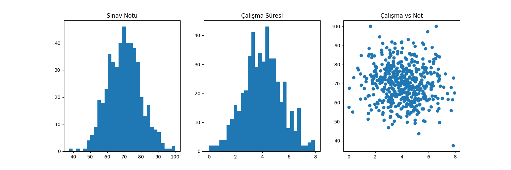

Bu projede Python kullanılarak 500 öğrenciden oluşan sentetik bir veri seti oluşturulmuştur. Oluşturulan veriler, gerçek hayattaki dağılımları taklit edecek şekilde normal dağılıma uygun olarak üretilmiştir.
Veri seti daha sonra matplotlib kütüphanesi kullanılarak görselleştirilmiş ve analiz edilmiştir.
Veri seti toplam 500 gözlem ve 3 sütundan oluşmaktadır:
Aşağıdaki grafikler, üretilen sentetik veriler üzerinden elde edilen dağılım, korelasyon ve diğer istatistiksel sonuçları göstermektedir:

Bu proje, sentetik veri üretimi, veri görselleştirme ve temel veri analizi konularını uygulamalı olarak göstermektedir. Gerçek dünya verilerine benzer yapılar oluşturularak analiz süreçleri simüle edilmiştir.